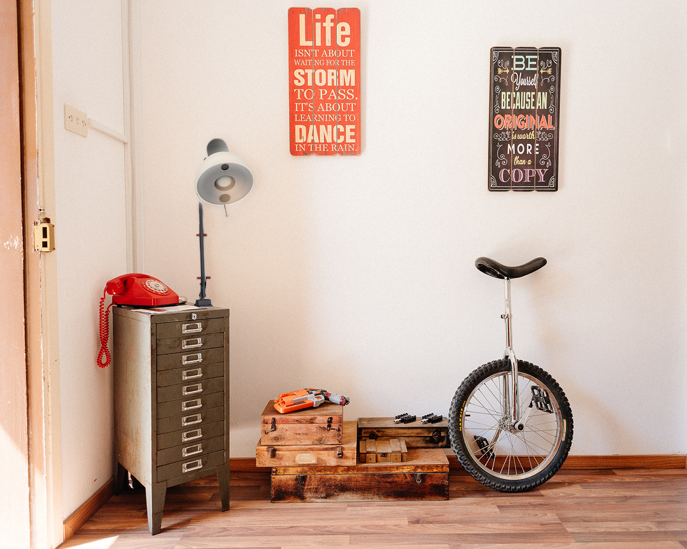

Was ist meyvn?
meyvn ist eine Lampe, die die Frage eines Anwenders erfasst und an meyvns Cloud Service übermittelt. Dort wird diese analysiert und kategorisiert. Dem Anwender wird daraufhin die entsprechende Hilfestellung aus meyvns Community zugewiesen und ein Echtzeit-Dialog ermöglicht. So erhält der Anwender die passenden Lösungen und Antworten.



Kalibriermodus
meyvn hebt den Kopf um mit seinem Nutzer auf Augenhöhe zu sein.Farbfeedback
meyvn gibt seinem Nutzer Feedback in Form von drei verschiedenen FarbmodisFreude
meyvn bewegt sich und dreht seinen Kopf, wenn er sich freut.Wütend
Bei vielen negativen Worten schüttelt meyvn den Kopf und färbt sein Licht rot.The community you need!
Community
Das Herz von meyvn ist die Community. meyvn ermöglicht dir den Draht zu den Experten, die du wirklich brauchst.Kollaboration
meyvn unterstützt die Kollaboration von mehreren Dialogpartnern, um gemeinsam zu einer Lösung zu finden.Kommunikation
Für Menschen die ein Gespräch suchen, um so ihre Antworten schneller zu erhalten, als auch Rückfragen stellen zu können.Nutzerzentriert
meyvns Design ist auf seine Nutzer zugeschnitten. Diese sollen Spaß daran haben mit meyvn zu interagieren, als auch eine einfachere Erfahrung in der Antwort-Suche zu erleben.
Nadine Edler
n.edler@meyvn.com
n.edler@meyvn.com
Len Harms
l.harms@meyvn.com
l.harms@meyvn.com
Janett Herdt
j.herdt@meyvn.com
j.herdt@meyvn.com
Sarah Lerch
s.lerch@meyvn.com
s.lerch@meyvn.com